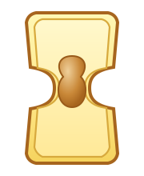
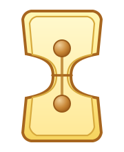

📌 Merksatz
Das nennt man Zelltheorie.
✨ Das lernst du hier
Kurze Häppchen, viel Klicken, leicht merken.
🌿 Baue eine Pflanzenzelle
Klicke die Teile an. Sie erscheinen nach und nach in der Grafik.
0 von 6 Teilen entdeckt
Tipp: Wenn du die Chloroplasten findest, geht das Sonnenlicht an.
Start
Klicke auf einen Begriff, um den Teil in der Zelle zu finden.
🍃 Wichtige Pflanzenzellen
Klicke auf ein Thema.
Wähle ein Thema
Hier erscheint eine kurze Erklärung in einfacher Sprache.
🐾 Entdecke eine Tierzelle
Auch Tierzellen haben einen Grundbauplan.
0 von 3 Teilen entdeckt
Merke
Tierzellen haben Zellmembran, Zellplasma und Zellkern.
🧠 Arten von tierischen Zellen
Tierzellen sehen je nach Aufgabe ganz unterschiedlich aus. Klicke auf eine Zellart.
Wähle eine Zellart
Hier erfährst du, wie verschiedene tierische Zellen aussehen und welche Aufgabe sie haben.
➗ Zellteilung und Wachstum
Klicke die Schritte an und beobachte die Abfolge wie in der Vorlage: Mutterzelle, Einschnürung, Tochterzellen und anschließendes Wachstum.
Mutterzelle

Einschnürung beginnt.

Die Trennmembran wächst jetzt klar von beiden Seiten nach innen und schließt sich zuletzt in der Mitte.
a) Mutterzelle
Die Mutterzelle ist noch ungeteilt und enthält einen Zellkern.
Wozu dient Zellteilung?
- Wachstum von Pflanzen, Tieren und Menschen
- Regeneration und Erneuerung abgestorbener Zellen, zum Beispiel nach Verletzungen
- Ungeschlechtliche Fortpflanzung, zum Beispiel bei Stecklingen oder Senkern
Fortpflanzung einfach erklärt
Zwei Eltern erzeugen Nachkommen. Die Kinder tragen Merkmale von beiden Eltern.
Ein Teil von nur einem Elternteil bildet neue Nachkommen. Die Merkmale sind fast gleich – wie bei Zwillingen.
🎮 Mini-Quiz
20 Fragen – Antwort wählen und sofort sehen, ob es stimmt.
🖼️ Bild-Quiz Bonus
Klicke das richtige Bild an. Du bekommst sofort Rückmeldung und eine Erklärung.